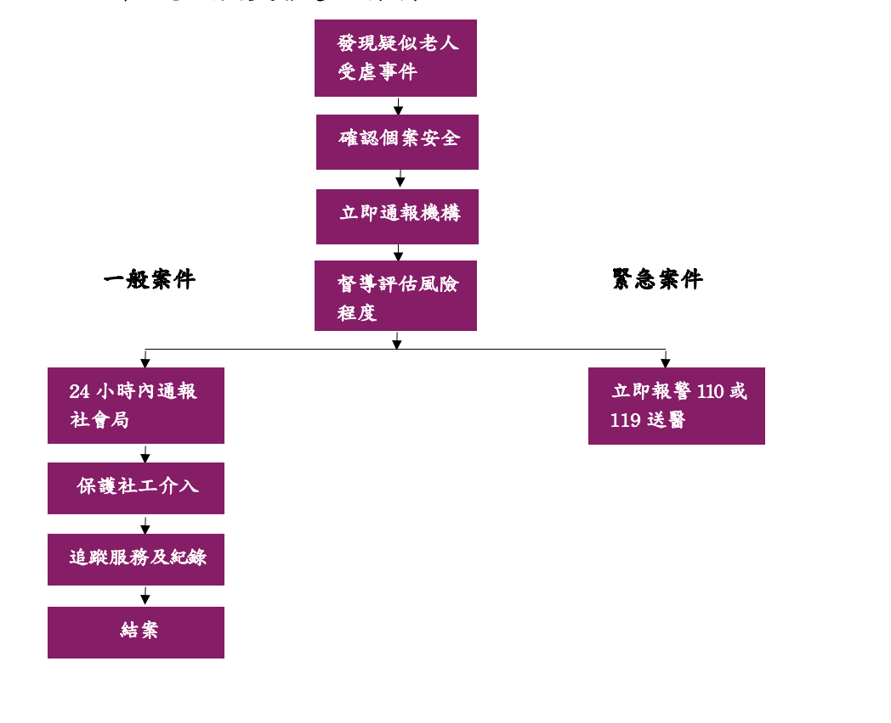

第一章 緒論

緒論
隨著人口老化及少子化，家庭照顧功能減弱，為因應失能、失智人口增加所衍生之長照需求，政府為滿足家庭照顧多元化需求，規劃長期照顧服務，對預期或已達六個月以上無法生活自理的民眾，由長照服務人員及單位，提供各種照顧及專業服務 ( 包含居家服務、日間照顧、家庭托顧、小規模多機能服務、專業服務 )、輔具租借、購買及居家無障礙環境改善、交通接送及喘息服務等，以回應高齡化社會的長照問題。
其中居家服務係長照十年計畫時期即推展之服務，其工作模式最具成熟，民眾不僅獲得可近性及可選擇性的服務，且能獲得有尊嚴及自主的照顧方式，留在自己熟悉的住所中，維持其原有的生活習慣，是較符合人性化需求及兼顧受照顧者自主照顧的方式，居家服務是獲得滿意度高的長照服務。
居家服務是透過照服員到宅至服務使用者家中服務，但其工作時間安排、服務項目規劃、服務關係建立、異常事件處理、服務品質的維護及跨專業溝通與協調等事務係由居督員協助處理。居督員為居家服務中重要的關鍵人物。
依據「長服法」及「長期照顧服務機構設立標準」規定，居家式長照機構應置照服員，每服務人數 60 人應置居督員 1 人；未滿 60 人者，以 60 人計。居督員應為專任。居督員角色非常重要，從接案到開案、服務計畫擬定、服務品質監督、溝通協調、教育督導、熟悉社區資源、問題解決及權益倡導等皆是其角色任務，亦即是居督員負有監督照服員與管理居家服務品質的重責大任。
機構組織架構
(一)、機構名稱:臺南市私立崇愛居家長照機構
(二)、機構地址:臺南市東區東門路三段253號11樓之3(1110室)
(三)、立案字號:南市衛照字第1140148373A號(換發)(自114年8月15日起變更)
(四)、設立日期:113年09月30日
(五)、機構負責人姓名:楊昆翰
居家照顧服務員的角色功能與工作職掌
居家照顧服務員（以下簡稱照服員）是居家式長照機構中直接提供照顧服務的重要專業人員，位於長期照顧服務的第一線，肩負協助服務使用者維持生活功能、提升生活品質及促進身心健康的重要責任。照服員透過提供日常生活照顧、身體照護、陪伴支持及健康促進等服務，協助服務使用者在熟悉的居家環境中獲得適切照顧，並減輕家庭照顧者之照顧負荷。同時，照服員亦扮演服務需求觀察者與資訊回饋者的角色，能即時發現服務使用者身心狀況或照顧需求之變化，並回報居家服務督導員及相關專業團隊，以確保照顧服務之品質與安全。
壹、 居家照顧服務員的資格及教育訓練
依據「長期照顧服務人員訓練認證繼續教育及登錄辦法 ( 下稱長照人員辦法 )」所訂，照服員相關規定如下：
一、照服員資格應符合下列之一：
完成照顧服務員訓練課程並取得結業證明書。
領有照顧服務員職類技術士證。
畢業於符合規定之護理、老人照顧、長期照顧、健康照護等相關科系（組）或學位學程。
具中央主管機關公告認可之其他照顧服務員資格。
二、照服員教育訓練：
照服員教育訓練分為長照共同訓練課程、專業訓練課程及繼續教育課程，相關規定請依長照人員辦法辦理。
貳、 居家照顧服務員的角色功能
照顧服務員是長期照顧服務體系中直接提供照顧服務的第一線人員，其主要功能在於依據服務使用者之照顧計畫，提供符合個別需求之照顧服務，協助維持其生活功能、促進健康及提升生活品質。
一、生活照顧者
依照照顧計畫提供居家照顧服務，協助個案維持日常生活能力，提升生活品質。
主要工作內容：
身體清潔、沐浴及洗頭
協助更衣
協助進食
如廁照顧
翻身、拍背、移位
陪伴服務
家務協助
備餐及代購生活用品
陪同外出、陪同就醫
二、健康觀察者
服務過程中持續觀察個案身心狀況，及早發現異常。
觀察內容包括：
精神及意識狀態
食慾及飲水情形
排便、排尿狀況
疼痛情形
跌倒風險
皮膚完整性
情緒及認知變化
發現異常時，立即回報督導員或相關醫療專業人員。
三、安全守護者
降低居家照顧風險，維護個案及自身安全。
包括：
預防跌倒
安全移位
使用輔具
居家環境安全檢視
感染控制
緊急事件通報
人身安全維護
四、照顧支持者
提供照顧陪伴，減輕家庭照顧者壓力。
例如：
提供陪伴及心理支持
鼓勵個案參與生活活動
協助建立生活規律
給予家屬照顧支持
五、資訊傳遞者
擔任個案、家屬與長照團隊之間的橋梁。
工作內容：
回報服務狀況
回報個案異常
協助家屬了解服務內容
配合個管師及督導員追蹤
六、服務紀錄者
如實完成服務紀錄。
內容包括：
服務時間
執行項目
個案反應
特殊事件
異常事項通報
七、專業合作夥伴
與長照團隊共同提供整合照顧。
合作對象包括：
督導員
個案管理師
家屬
參、居家照顧服務員之工作職掌
職掌 | 內容 |
提供居家照顧服務 |
|
觀察個案身心狀況 |
|
維護服務安全 |
|
職掌 | 內容 |
執行服務紀錄 |
|
異常事件通報 |
|
居家照顧服務員工作倫理
照服員的工作，涉及服務使用者的身心安全、隱私保護、資源分配及人際互動等不同層面，因此「工作倫理」是確保服務品質與專業信任的根本。倫理不僅是行為規範，更是居督員在面對價值衝突與實務困境時，做出專業抉擇的依據。
本節將說明居督員在執行職務時應遵守的核心倫理原則，包括責任、誠信、尊重、公平與保密等，並探討在與同僚合作及面對服務現場兩難情境時，如何依循專業倫理作出判斷與回應。透過明確的倫理框架與自我覺察，居督員能在保障服務使用者權益的同時，也維護照服員與居家式長照機構的專業形象，建立值得信賴的照顧關係。
壹、 工作倫理
倫理 (ethics) 一詞，源自希臘文，意指風俗或習慣，也就是道德行為標準。工作倫理指的是在工作場合中展現出的道德標準、價值觀與行為準則，這些原則不僅影響個人的職業形象，也對團隊合作服務品質與居家式長照機構信譽產生深遠的影響。服務專業是一系列的知識與訓練 但在行使專業提供服務時，必須將倫理規範納入執行的動態軌跡中，同時保護服務使用者與居家式長照機構。
一、尊重個案自主權
- 尊重個案的意願、信仰、文化及生活習慣。
- 提供服務前應先徵詢個案同意。
- 不強迫個案接受不願意的照顧方式。
- 鼓勵個案在能力範圍內自主完成日常活動。
二、尊重隱私與保密原則
- 保護個案個人資料及病情資訊。
- 不任意向他人透露個案及家屬隱私。
- 不拍攝或散播個案照片、影片及個人資訊。
- 未經同意不得公開個案相關資料。
三、公平服務
- 不因年齡、性別、宗教、族群、疾病、失能程度或經濟狀況而有差別待遇。
- 平等對待每一位服務對象。
- 提供一致且適切的照顧服務。
四、維持專業界線
- 不接受個案或家屬金錢、貴重禮物或借貸。
- 不代管個案財物、存摺、印章或提款卡。
- 不從事推銷、招攬或其他商業行為。
- 不與個案建立不適當的私人關係。
五、誠信負責
- 如實完成服務紀錄。
- 不虛報服務時間或內容。
- 依照照顧計畫提供服務。
- 發現異常立即回報督導員。
六、維護服務安全
- 遵守感染管制及防護措施。
- 正確使用照顧技巧及輔具。
- 注意個案及自身安全。
- 發生緊急事件立即通報並依流程處理。
七、團隊合作
- 尊重督導員、個管師及其他專業人員。
- 主動回報個案身心狀況變化。
- 配合機構政策及照顧計畫執行服務。
- 共同提升照顧品質。
八、持續精進專業能力
- 依法完成繼續教育課程。
- 參與機構教育訓練。
- 學習新的照顧知識與技能。
- 提升服務品質及專業能力。
貳、個人資料管理與保密辦法
為保障服務使用者、家屬及員工之個人資料安全與隱私權，避免個人資料遭不當蒐集、處理、利用、洩漏、竄改或遺失，並依據《個人資料保護法》及相關法令規定辦理，特訂定本辦法。
法源依據如下：
- 個人資料保護法及其施行細則。
- 長期照顧服務法。
- 長期照顧服務機構相關設立及管理規定。
- 其他相關法令規定。
（一）個人資料使用原則
蒐集之個人資料僅限於下列用途：
- 提供長期照顧服務。
- 長照管理系統登錄及申報。
- 個案管理及服務品質追蹤。
- 緊急醫療及安全處置。
- 人事及行政管理。
- 法令規定之申報事項。
- 經當事人同意之其他用途。
未經當事人同意，不得任意提供予第三人。
（二）資料保密措施
紙本資料管理
- 個案資料應集中存放於上鎖櫃內。
- 非業務相關人員不得翻閱。
- 文件借閱應登記管理。
- 廢棄文件應使用碎紙機銷毀。
電子資料管理
- 電腦應設置個人帳號及密碼。
- 定期更新密碼。
- 資料應定期備份。
- 禁止將個案資料存放於私人設備。
- 未經授權不得複製、下載或傳送個案資料。
通訊軟體管理
- 僅得於業務需要範圍內使用。
- 不得公開傳送個案敏感資料。
- 個案照片或文件傳送後應妥善管理。
- 員工離職後應立即退出相關工作群組。
（三）員工保密義務
- 員工因執行職務知悉之個案資料應負保密責任。
- 不得向無關第三人洩漏個案資訊。
- 不得於公開場所談論個案隱私。
- 不得於社群媒體發布個案相關資訊。
- 保密義務於離職後仍持續有效。
（四）資料調閱管理
調閱個案資料應符合下列規定：
- 因業務需要始得調閱。
- 調閱人應經主管同意。
- 應留下調閱紀錄。
- 不得擅自拍照、影印或外流。
（五）個人資料異常事件處理
發現資料外洩、遺失、遭竊或不當利用時：
- 立即通報主管。
- 採取補救措施。
- 調查事件原因。
- 必要時通知當事人。
- 檢討改善並留存紀錄。
（六）教育訓練
- 新進員工應接受個資保護教育訓練。
- 每年至少辦理一次個資保護及保密教育訓練。
- 訓練內容應留存紀錄備查。
（七）違規處理
員工違反本辦法者，依情節輕重得予以：
- 口頭告誡。
- 書面警告。
- 記過處分。
- 調整職務。
- 終止勞動契約。
- 涉及法律責任者依法辦理。
（八）全體員工應簽署「個人資料保密切結書」。
第二章 居家服務管理

服務流程管理與派案及排班機制
「服務流程管理」是居家式長照機構運作的核心基礎，指自服務申請、派案、開案、執行、追蹤至結案等一連串服務歷程的管理與控管。透過明確的流程規範與紀錄機制，能確保服務提供的連續性與一致性，並兼顧服務使用者權益與照服員工作安排之合理性。
開案／收案
一、服務使用者來源
（一）服務使用者自行申請。
（二）服務使用者家人申請。
（三）政府機關派案。
（四）A 單位派案。
（五）機關團體轉介。
（六）居家式長照機構自行開發。
二、接案評估
（一）確認服務單位的服務量能。
（二）確認居家服務的服務需求。
（三）確認服務需求內容。
三、開案／收案流程
（一）細讀服務使用者相關資料以作為服務之依據。
（二）聯繫申請者確認需求與初次家訪時間，評估照顧狀況與需求並說明服務內容，要於規定期限內完成家訪及在衛生福利部照顧服務管理資訊平臺（下稱照管平台），告知主管機關及相關人員，地方政府另有建置資訊平臺，則依其規定辦理。
（三）初次家訪評估要項
- 再次確認與接案相關資料的符合性。
- 居家環境及社區環境觀察，考慮環境之安全性，如需提供協助沐浴服務，則需瞭解浴室空間、沐浴方式及工具；如需陪同外出，則需瞭解社區通用設計的情況。
- 瞭解服務使用者及其家屬之期待，並說明服務範圍與限度。
- 瞭解服務使用者及其家屬生活習慣。
- 確認是否具備服務所需之設備。
- 其他狀況觀察：如服務使用者某些特徵或狀況在接案相關資料中並未能明確顯示、服務使用者家屬或同住者行為是否有潛在危險性等。
（四）經家訪後確認提供服務，須簽訂經主管機關同意備查之一式二份的定型化契約，簽訂時需逐條說明，使簽約者充分瞭解權利義務。
（五）依據接案相關資料及初次家訪評估後之綜合資訊，擬定服務計畫包含服務使用者及其家屬狀況、照顧問題分析、服務目標等，上傳主管機關規定內容至照管平台。
（六）以服務使用者或其家屬實際需求，運用資訊系統遴選適當服務人力，可將照服員專業職能、人格特質、語言、宗教、服務限制、交通銜接方式及排班狀況等列入資訊系統設計，使媒合能更快速及準確，然後首次服務時陪同照服員於約定時間前往提供服務。
四、開案/收案流程圖示：
個案來源：案主自行申請、相關單位轉介、照管中心自行開發
系統派案至單位
評估機構是否有能力承接
照會日首次服務日
No
Yes
5日
居督暨居服員共同訪視以及簽約
是否符合開案條件
提供相關資訊
轉介其他單位
No
Yes
派遣適合的服務人員
定期一個月電訪追蹤
滿三個月家訪
不開案
No
是否需要其他
資源進入
Yes
由居督協助個案暨家屬媒合最適合的長照、醫療及其他資源：
a.長照專業服務
b.居家護理
c.居家醫療
d.慈善社福團體
e.社福中心
貳、 暫停服務
一、當服務使用者不需要服務或有下列情形或依主管機關訂定暫停情形，則視實際狀況暫停服務，自費者可由服務單位自行決定暫停與否；申請政府補助者，依地方主管機關規範暫停服務，並定期電訪追蹤瞭解是否恢復服務：
（一）住院、離家、或其他因素暫時無法接受服務。
（二）自行聘請照顧人力。
（三）服務環境不安全，例如房屋頹圮、寵物具攻擊性等。
（四）服務使用者或服務使用者家屬的言行舉止構成居督員、照服員人身安全之危險、恐懼、名譽及權益受損，致使服務難以繼續。
（五）服務使用者或服務使用者家屬疑似或確定患有高度傳染力之傳染病，對照服員構成威脅時。
（六）照服員疑似或確定患有高度傳染力之傳染病，經評估無法由其他照服員繼續服務時。
（七）服務使用者或服務使用者家屬期待的服務時間、性別、體型或人格特質，確定暫無合適人力時，且拒絕派遣之照服員繼續服務。
（八）實際要求服務之內容與契約書所定之服務內容不符，彼此雙方無法達到共識。
（九）有其他欺騙或不合宜行為者。
二、確認暫停原因與預估時間須記錄於服務單位資訊系統、照管平台，並通知照服員取消或調整服務班表。
三、確認暫停期間服務費用及權責。
四、暫停服務流程圖示：
個案
符合暫停服務條件
a. 住院中
b. 短暫離開本市超過7日
c. 個案或家屬考慮中
d. 轉介其他機構
e. 其他
No
與個案溝通
提供相關資訊，維持持續進場。
Yes
聯絡主責個管
填寫暫停異動通報
不暫停
Yes
完成
參、 轉介
一、轉介的目的
（一）確保服務連續性與完整性。
（二）提供更專業或更適切的服務。
（三）有效運用社區資源。
（四）避免服務重疊與資源浪費。
二、轉介流程通常包含幾個關鍵步驟：評估服務使用者需求，尋找合適的轉介對象進行轉介，以及後續追蹤。轉介的目的是為了提供服務使用者更適切的服務，以解決其面臨的問題，並協助其達到更好的生活品質。
三、服務使用者如有非長期照顧服務需求，如經濟、物資、教育、就業等情形，評估轉介原因與資源適配性進行資源轉介。
四、依服務單位建立的轉介流程及相關表單轉介並追蹤關懷且留有相關記錄。
五、轉介時需將服務使用者基本資料、狀況簡述、處理經過及轉介原因，告知受轉介單位，並請受轉介單位回覆處理情形。
六、轉介的注意事項
（一）保密原則
在轉介過程中，必須嚴格遵守保密及保護服務使用者隱私原則，確保服務使用者的個人資料不被洩漏。
（二）尊重意願
轉介前，必須充分討論並尊重服務使用者的意願，取得同意。除非有立即性的危險，否則不得強迫轉介。
（三）專業合作
在轉介過程中，應選擇適宜的受轉介單位及保持良好的溝通和合作，並追蹤轉介後的服務情況，共同為服務使用者提供最優質的服務。
七、轉介流程圖示：
個案
提出轉介需求
與個案溝通
No
Yes
聯絡主責個管
提供相關資訊，維持持續進場。
可轉介
Yes
聯絡適合的轉介機構
不轉介
寄送轉介單
Yes
完成
肆、 結案
一、當服務使用者不需要服務，或服務單位無法提供服務使用者需要之協助時，則需視實際狀況結案，可由以下指標判斷，並進行後續追蹤：
（一）服務使用者自我照顧能力已改善。
（二）服務使用者入住 24 小時住宿機構，經持續追蹤 2 個月，服務狀況穩定。
（三）服務使用者暫停服務超過 2 個月以上（例如：住院、出國、赴其他子女家暫住等）。
（四）親友自行照顧或自行聘請照顧人力。
（五）遷出服務區域。
（六）服務使用者失聯。
（七）服務使用者過世。
（八）服務使用者或其家屬違反居家照顧服務使用，經協調處理後仍無法改善者。
（九）服務使用者或其家屬主動申請終止服務。
（十）服務人力不足時，進行轉介至其他居家式長照機構。
（十一） 嚴重威脅居督員、照服員人身安全之危險、恐懼、名譽及權益受損，經協調後仍無法改善時。
（十二） 服務使用者或其家屬出現性騷擾防治法所定義、暴力等行為，對居督員、照服員直接造成權益傷害時。
（十三） 其他依定型化契約所列結案事由。
二、結案評估要涵蓋服務結果、服務過程，服務滿意度，以檢視服務成效、服務回饋、服務方法與技能的精進，如：有達成改善生活功能及增進自理能力等原訂照顧目標、照顧技巧不專業致使無法滿足照顧需求等，以作為服務品質精進的依據。
三、服務使用者確定結案時，須記錄於服務單位資訊系統、照管平台，依服務單位建立之流程完成結案資料並歸檔，依長服法相關規範年限保存。
四、結案流程圖示：
個案
提出結案需求
與個案溝通
No
Yes
是否需要其他
資源進入
提供相關資訊，維持持續進場。
聯絡主責個管
可結案
Yes
不結案
填寫結案單
Yes
完成
伍、服務對象管理與照顧服務配合辦法
為確保服務對象獲得安全、連續且符合需求之照顧服務，照顧服務員應依機構照顧計畫執行服務，並配合個案管理師、居家督導員及相關專業人員，共同提供完整照顧。
一、照顧服務員應配合事項：
（一）依照照顧計畫提供服務
- 依核定服務項目執行服務。
- 不得自行增加、刪減或更改服務內容。
- 不得私下接受案家額外委託工作。
- 如案家提出計畫外需求，應回報督導員處理。
（二）確實執行服務紀錄
每次服務完成後應：
- 完成服務紀錄。
- 如實登錄服務時間。
- 記錄個案狀況。
- 記錄特殊事件。
- 完成電子打卡。
（三）異常事件立即回報
（四）服務異動立即回報
（五）維護服務關係
- 尊重個案自主權
- 尊重家屬
- 保持專業界線
- 不接受餽贈
- 不借貸金錢
- 不推銷商品
- 不洩漏個案資料
第二節 服務使用者服務的評估與計畫執行配合
為確保服務使用者獲得符合需求且安全之照顧服務，照顧服務員應配合機構照顧計畫執行服務，並持續觀察服務使用者身心狀況，適時回報異常情形，提供個別化且連續性的照顧。
壹、 照服員應配合事項
（一）了解服務使用者需求：
- 基本資料
- 健康狀況
- 身體功能
- 認知及溝通能力
- 家庭支持情形
- 服務內容及注意事項
（二）依照照顧計畫提供服務：
- 依機構照顧計畫執行服務。
- 不自行增加、減少或變更服務內容。
- 尊重服務使用者意願及能力。
- 鼓勵維持自我照顧能力。
（三）持續觀察服務使用者狀況：
- 精神及意識
- 活動能力
- 飲食及排泄
- 疼痛情形
- 皮膚狀況
- 情緒及認知
- 跌倒風險
- 其他異常情形
（四）即時回報：
- 身體狀況明顯改變
- 跌倒
- 拒絕服務
- 情緒異常
- 受傷
- 緊急送醫
- 家庭照顧狀況改變
（五）配合照顧計劃調整：
- 了解新的服務內容。
- 依新照顧計畫提供服務。
- 配合督導員說明事項。
- 如有執行困難立即回報。
第三節 家庭溝通及處遇技巧
在居家服務過程中，家庭是最主要且最複雜的服務場域之一。服務使用者的需求、家屬的期待與照服員的工作方式之間，常存在差異與張力，若缺乏良好溝通與適當處理，容易引發誤解、衝突或服務中斷。照服員員必須具備良好的家庭溝通與處遇技巧，協助各方理解彼此立場，促進合作關係，並在必要時進行協調與支持，以確保服務持續與品質穩定。
本節內容將介紹照服員在家庭互動中的溝通策略與處遇方法，包含如何理解家庭動力與情緒表達、運用傾聽與同理化解衝突、協助照服員建立專業界線，以及面對特殊或高壓情境時的介入原則。
壹、 家庭的定義
家庭是一種以婚姻、血緣、共同生活為基礎關係下的共同生活單位。家庭當然也可以定義為雖然有不同的結構，也許有多元的組合模式，但仍可以在有共識下，一起生活。
家庭提供成員以情感關係及心理、經濟、文化等支持為主，尤其是因為在一起居住而產生的伴侶間的關係，包含家庭成員間的親情關係所帶來的安全感。更重要的是家庭還加強了社會關係的秩序性和穩定性，也連結了不同的社群團體或組織，共同在社會中生活。
儘管不同社會中的家庭結構可能有所不同，但所有的人類社會都有某種形式的家庭，也就是說，家庭是普世文化通則之一。在過去的觀念裡，核心家庭存在於所有的人類社會當中，核心家庭要不就是一個社會中主要的家庭形式，要不就是更大型的家庭當中的基礎單位。在所有的人類社會中，核心家庭都是顯著且具有強大作用的團體。
家庭在傳承和強化社會價值觀與文化方面扮演著不可或缺的角色。作為社會的基本單位，家庭不僅是文化遺產的傳遞者，更是塑造社會行為和態度的重要場所。家庭成員間的日常互動和溝通是價值觀和文化傳承的主要途徑，父母與孩子之間的對話、家庭傳統的慶祝活動，以及家庭教育都深刻影響著下一代的價值觀形成和行為模式。
貳、 家庭結構的改變
近 20 年來，隨著經濟文化的改變，包含少子化、外來人口的移入、高齡化的議題，加上離婚率的上升，多少都讓家庭結構出現不同的變化。現代家庭結構呈現出多樣化的趨向，過去傳統的核心家庭，以父母與子女為基礎的模式已逐漸演變成更多元的形式。
對於家庭結構的改變，也相對衍生出一些家庭的問題，例如經濟、工作、照顧等議題。尤其是面對家庭照顧的議題時，往往會造成家屬間極大的困擾，許多長照悲歌的社會重大議題，仍以照顧的議題為最大的關鍵因素，也是家庭成員間的最大困擾。
家家有本難念的經，在實務經驗中，家庭間的紛爭，對照服員而言，是相當困擾的一件事。許多有經驗的照服員，對於家庭成員間的關係是相當敏感的，因為這會攸關服務使用者的照顧服務模式。
參、 家庭溝通的重要性
家庭社會工作是以家庭為重心的服務工作，運用社會工作的方法促進家庭功能，協助家庭解決個人或經濟等問題。所以家庭社會工作會依據當時的時空環境狀態，支持家庭功能正常運作。
家庭工作的重點，就是鼓勵家庭成員可以共同參與、相互溝通、凝聚共識，共同解決家庭問題。
照服員面對不同類型的照顧或支持性議題，確實可以依據過去經驗或與資深照服員討論，建立與規劃符合服務使用者需求的照顧服務模式。但當案家對於照顧議題有不同的想法時，往往會出現溝通障礙，甚至無效溝通。照服員可以適時運用家庭社會工作的概念，尤其是面對照顧服務的議題時，家庭成員間的分工與共同承擔責任的概念就相當重要。
照服員也是居督員及案家溝通的橋樑，照服員應該具備以下技巧，才能有效與家庭間建立溝通管道。
一、冷靜的思考
冷靜的定義就是面對任何事物能處變不驚，且能在短時間內，做出有效的判斷。許多的經驗都告訴我們，家庭成員在長期照顧的過程中，可能累積過多的情緒，壓力，包含照顧分工不均，經濟壓力等現實問題。此時照服員就必須發揮專業的判斷，冷靜的分析家庭的問題與需求，提供家屬解決問題的方向。
二、同理的技能
照服員很重要的工作技能就是同理心的運用，設身處地同理家屬的照顧壓力、焦慮或是情緒的起伏等，有效提供家屬合宜的處遇規劃。許多的經驗告訴我們，當我們同理家屬的困境，家屬對於照服員的處遇建議，也相對比較容易接受。畢竟在照顧性的議題上，家屬與居家式長照機構一定要有共識，才能提供服務使用者更合宜的照顧服務模式。
三、法令的熟悉
照服員不只要熟悉長服法，對相關社福的法令或規定也要瞭解，畢竟有時候案家提出可能違法的需求時，照服員可以適時提醒。依法行政的觀念，也是照服員要自我提醒的工作重點。所以照服員在面對家庭或家屬需求時，適時灌輸正確的法律觀念，或尋求法律的支援，也是保障照服員工作安全的重要關鍵。
四、多方的溝通
居家服務其實就是一種個案服務工作的策略，如何運用最有效的方式，達到照顧服務的目的。所以溝通確實很重要，包含跟服務使用者本人、家屬或是其他相關的支持服務。照服員要能學習溝通，將不同的意見整合，提供服務使用者或家屬參考使用。照服員在家庭工作上，溝通技巧的運用，是居家服務能夠穩定執行的關鍵因素。
五、資源的運用
社會福利資源面向相當廣泛，可以涵蓋不同的需求層面。所以在家庭溝通的過程中，可以適時提供更多社會福利資源的運用資訊，鼓勵家屬選擇或運用。
六、明確的範圍
照顧服務的定義本來就會因應當時的需求進行彈性調整，但基本上仍以當時申請照顧服務需求的服務使用者本人為主，所以在與案家溝通的過程中，界定明確的照顧範圍就是相當重要的關鍵因素。有些爭議問題發生的原因，就是照顧服務的範圍沒有說清楚，導致案家誤解，所以這也是照服員相當重要的工作概念。
七、客觀的處理
家庭工作最困難的就是面對家庭成員，複雜的家庭關係往往是照服員最難面對的課題。所以照服員最重要的就是以服務使用者為中心的服務處遇模式，與家庭成員溝通，讓家中成員能夠瞭解照服員的工作是聚焦在服務申請者的專業評估與服務規劃，家庭問題，就以客觀的方式，由家屬自己面對與處理。
八、確切的執行
當許多的照顧議題都溝通且達成共識，最終就是啟動服務計畫。或許在家庭溝通的過程中會受到許多衝擊甚至挫折，但照服員最重要的目的就是協助家屬取得最適切照顧服務使用者的方式。也因為經過充分的溝通，家屬對於照顧議題能夠達成共識才是成功的關鍵。所以充分溝通的過程看似冗長，但也是必須要面對，也可以累積照服員的實務經驗。
九、定期的修正
服務策略不可能只限定一種方式，尤其是居家服務，勢必隨著服務使用者生理變化或特殊需求等進行服務提供方式的調整，所以定期的檢視與修正，才能提供更合宜的服務措施。修正的目的是希望可以持續提供更適切的服務，也可以藉由重新評估或修正的過程中，讓服務使用者或家屬再次表達需求與想法，持續規劃合宜的服務計畫。
十、服務的終止
居家服務其實相當多變，因為會隨著服務使用者的生理變化或照顧需求延續或終止服務。但有些服務終止不單是上述的原因，可能會包含多樣的複雜因素，所以當面對此狀況，照服員一定要與服務使用者或家屬謹慎溝通。任何的服務都期望可以好聚好散，尤其是因為特殊狀況導致服務終止時，照服員就必須更有智慧的面對。
資源不足或合作機制修正

第四章 風險管理
第一節 風險辨識與預防策略
居家服務的提供牽涉到服務使用者的安全、照服員的作業環境及居家式長照機構的營運穩定，任何環節的疏忽都可能造成風險或危害。為確保服務品質與人員安全，照服員需具備良好的風險意識與預防管理能力，透過制度化的辨識、評估與監測程序，提前發現潛在危險並採取因應措施。
本節將說明風險管理的概念與特性，並介紹照服員在實務上如何運用風險辨識工具與觀察架構（如檢核表、生理與環境指標），分析服務過程中可能發生的風險來源，包含服務現場、交通安全、感染防護、人際互動及心理壓力等層面。
壹、 風險管理的概念
一、風險的定義與特性
「損失的不確定性」是風險常被使用的廣泛定義，其特性可分為：
（一）未來性：風險意指未來可能發生者，與迫在眉睫之危機不同。
（二）衝擊性：風險對目標之達成存有影響。
（三）隱晦性：風險是部分未知的，不易全然被掌握者。
（四）變化性：風險可能隨時變化、非固定性。
二、風險管理的意涵：
基於風險的特性，風險管理乃為有效管理可能發生之事件，以及盡量最小化其不利影響，所執行之步驟與過程。風險管理的基本架構包括辨識、評估、處理、監控等程序，其中重要觀念包含：
（一）事件發生之機率或其影響程度是可以減少的。
（二）風險管理非在於追求「零」風險，而是強調於可接受之風險下，追求最大好處。
因此，風險管理的目的是提升服務安全，保護服務使用者、居督員、照服員及居家式長照機構。居督員就像是風險的守門人，需具備風險敏感度，善用團隊與制度進行預防性管理，才能提供安心服務。
貳、 風險辨識的方式
一、辨識風險的重要性
辨識風險是風險管理中最關鍵步驟，目的是發掘服務輸出過程中，可能面臨之各項風險及其如何發生。若於辨識過程中產生錯誤，導致重要之高度風險未被正確辨識，將無法對症下藥；完整進行風險的搜尋與辨識，可依循下表架構。
風險辨識的架構
觀察重點 | 檢核問題範例 |
生理 / 環境 | 生命徵象是否穩定 ? 地面是否濕滑？有無扶手？ |
情緒狀況 | 服務使用者的情緒是否波動？ |
社會支持 | 家屬是否參與或排斥服務？ |
設備 / 技術 | 輔具或移位技巧是否正確使用？ |
居督員／居家式長照機構處理機制 | 是否建立通報與支援系統？ |
二、風險辨識的方法
（一）服務記錄檢閱與分析：
檢閱照管平台的照顧計畫與服務記錄、回顧異常事件。
（二）家庭訪視：
檢查服務使用者生理、情緒狀態、服務環境、支持系統等狀況，並聽取服務使用者、家屬的不同看法。
（三）意見交流：
居督員與照服員、跨專業職類、內外部督導意見交流，從不同專業視角檢核問題。
參、 居家照顧服務員工作常見的風險類型
照服員的工作模式、服務使用者及環境，往往無法與辦公室、醫療養護機構等常態性模式相比，故對於工作環境、交付之作業，以及工作流程，將風險分類會較易辨識。
照服員工作常見的風險類型，大致可分為人身安全、服務品質、行政管理等方面，茲分述如下。
一、人身安全風險：
（一）性騷擾、性侵害、肢體暴力、語言暴力：
服務時，服務使用者或家屬可能施展性騷擾、性侵害、肢體暴力或語言暴力。
（二）傳染病風險：
在服務過程中，接觸到患有傳染病的服務使用者、家屬，產生感染風險，更甚者因在社區穿梭服務，自身成為傳染媒介。
（三）交通安全風險：
往返服務使用者家中時，可能遭遇交通事故。
二、服務品質風險：
（一）服務過失：
照服員可能因疏忽或不當的指導，或是未即時配合服務使用者體況與需求的變化以調整服務計畫，導致照服員在服務過程中發生失誤，進而影響服務使用者的福祉。
（二）意外事件：
服務使用者面臨身體狀況突然惡化送醫，或跌倒、燒燙傷、割傷，其他損害生命安全之意外、天然災害或財務糾紛，需要通報居督員及時協助處理、通報、應變，並提供相關支持。
（三）溝通衝突：
服務使用者、家屬與照服員之間可能因意見不合或溝通不良而產生衝突，需要居督員介入協調，居督員與照服員之間也可能發生。
（四）個資外洩：
在溝通或服務過程中，不慎外洩服務使用者、家屬個資、照管系統資料，或是不當外洩通訊軟體溝通對話。
三、行政管理：
（一）時效性壓力：
照服員的工作常具時效性壓力，例如每個月繳回工作紀錄表的準時度，一旦逾期，隨之影響到機構核銷，或機構遭受罰則。
（二）記錄或核銷疏漏：
資料未正確、詳實、即時登錄，輕則記點，重則產生相關法律責任。
肆、 居家照顧服務員工作風險的預防機制
風險辨識後需再針對風險發生的機率、嚴重性加以分級，對其採取適當的預防或控制措施，還要配合最新法規政策、考核與評鑑指標定期評估檢討，以調整安排適當又有效之作法，例如：
一、 強化照服員培訓：
照服員應接受專業的培訓，提升其風險評估、危機處理、溝通合作及服務品質管理的技能。
二、 建立完善的風險管理制度：
居家式長照機構應建立完善的風險管理制度，包括風險評估、應變措施、以及事件報告、事後檢討等。
三、 營造照服員即時回報與多加溝通的職場環境：
鼓勵照服員及時向居督員尋求協助，多加溝通，掌握服務使用者服務狀況。
四、 加強與服務使用者、家屬溝通：
照服員本身應加強與服務使用者、家屬溝通，建立良好互動，並協助家屬理解服務內容與服務過程。 照服員應該依專業的評估進行調整跟進行相關通報，以保障服務使用者及自身之安全。
五、 瞭解相關法令：
照服員應瞭解相關法令，掌握最新政策與規定，以確保服務過程符合規範。
綜上所述，工作風險是指潛在的危險因子，職災是危險「發生」後的結果，實際發生了由工作風險導致的傷害、疾病或死亡事件。因此要預防職災，意即依據容易面臨之風險，如下表所述建構並落實預防機制。
風險的預防與應對策略
層面 | 策略建議 |
機構制度 | 建立風險通報流程與異常事件記錄表。 |
教育訓練 | 定期進行危機處理與風險辨識訓練。 |
督導管理 | 針對服務使用者定期訪視、電話關懷；針對照服員關懷溝通、個別督導、團體督導。 |
跨專業合作 | 建立與跨專業職類、A 個管的聯繫管道，快速協同處理。 |
員工支持 | 建立心理支持與回報制度，避免居督員單獨承擔風險。 |
人身安全 |
|
第二節 常見意外事件處理及通報
在居家服務的現場中，無論是面對服務使用者、家屬或照服員，都可能因環境、健康狀況、操作過程或外在因素而發生各類意外事件。這些事件若未能即時處理與妥善通報，不僅可能危及服務使用者安全，也會影響居家式長照機構的專業形象與法律責任。照服員在意外事件管理中扮演關鍵角色，需具備即時判斷、協調與後續追蹤的能力。
本節將說明意外事件的定義、如何預防與通報的重要性，介紹不同事件類型與實際案例，並提供標準處理流程與時限規範。透過建立明確的通報與檢討機制，居督員能有效降低風險、預防再發，確保服務安全與品質。同時，本節亦強調跨部門合作與溝通的重要性，使事件處理不僅止於反應，更能促進制度改善與持續學習。
壹、 意外事件的定義
意外事件 (incident) 指在提供服務過程中，任何行為、疏忽、情境事件或環境，對服務使用者或其他人（例如工作人員或服務使用者的親屬）已經造成或合理預期可能會造成身心傷害、死亡、財產毀損、其他警訊傷害的事件皆屬之 (Aged Care Quality and Safety Commission, 2021)。
貳、 意外事件的預防
為降低居家服務現場意外事件的發生風險，居家式長照機構與照服員應建立「事前防範」的管理思維。除依循風險辨識與預防策略進行環境與人員安全檢核外，亦應落實以下預防措施：
一、 環境安全檢查：
定期檢視案家動線是否通暢、照明是否充足，避免地面濕滑、物品散落或電線裸露等危險因子。
二、 設備與輔具檢測：
確認助行器、扶手、浴椅、床邊欄杆等輔具安裝穩固、使用安全，並適時協助維修或更換。
三、 服務人員安全訓練：
強化居督員自身及照服員對跌倒防治、緊急處置、感染防護及居家訪視安全等主題之教育訓練。
四、 健康與行為觀察：
持續評估服務使用者之身體功能與認知狀況變化，特別是容易跌倒、嗆咳或走失之高風險服務使用者，及早調整服務內容與陪伴方式。
五、 通報與回饋機制：
建立相關通報制度，鼓勵照服員針對潛在風險主動通報，透過事後檢討與經驗分享，強化全體人員的安全意識。
透過上述措施，可讓居家服務從「事後補救」進一步提升至「事前預防」，確保服務使用者、照服員與居督員的人身安全，並強化居家式長照機構的整體風險管理文化。
參、 意外事件的通報及處理原則
一、應通報之意外事件類別
（一）服務過程中
類別 | 發生時機 | 定義及項目 |
|---|---|---|
送醫事件 | 服務過程 | 潛在性或已危急生命、肢體及器官功能狀況，需快速控制與處置。 註：如服務過程中，個案因身體不適，需緊急送醫治療。 |
照顧意外事件 | 服務過程 | 因意外跌落至地面、進食時發生梗嗆或食物進入呼吸道等照顧意外。 註:
|
藥物事件 | 服務過程 | 與給藥過程相關之異常事件，如：對象錯誤、藥物錯誤種類、劑量錯誤、使用途徑錯誤，致個案服藥後發生之異常事件。 |
治安事件 | 服務過程 | 服務過程中發生個案失蹤、物品被偷竊、騷擾等事件。 |
傷害行為事件 | 服務過程 | 服務過程中發生言語衝突、身體攻擊等事件。 |
公共意外事件 | 服務過程 | 服務過程中住所發生火災、天災、水災等緊急事件。 註:非服務過程中發生之公共意外，至衛生福利部照顧服務管理資訊平台異動通報紀錄即可。 |
違反專業倫理守則者 | 服務過程 | 如侵害個案及其家屬隱私權、向個案推銷、販售、借貸及不當金錢往來之行為、假借廣告名義，行招攬服務、巧立名目向民眾收取費用。 |
家庭暴力暨性侵害事件責任通報 | 不限服務時段，知悉時即通報 |
|
自殺(含意圖)、自傷事件 | 不限服務時段，知悉時即通報 | 長期照顧服務人員於知悉有自殺行為情事時，於24小時內進行自殺防治通報作業。 註：依自殺防治法第11條及自殺防治法施行細則第13條規定辦理。 |
傳染病通報 | 不限服務時段，知悉時即通報 | 傳染病定義:依傳染病防治法第三條規定之傳染病類別。 通報定義：
|
其他 | 服務過程 | 非上列個案安全事件 |
二、事件嚴重度與通報時效
事件發生後，發現異常事件的第一線服務人員應立即報告單位主管，說明事情發生經過，現場對服務使用者及其家屬即時解說並取得諒解，不得無故延遲回報。
（一）初報
嚴重度
定義 | 通報時效 | 通報要點 | 附註 | |
無受傷害 | 事件發生於服務使用者身上，但沒有造成任何的身體傷害 | 24 小時內 | 通報單位應完整記錄事發經過，並於 24 小時內完成異常事件通報單遞交至業務主管機關，並應至照管平台同步完成異動通報知會照專及 A 單位。 | 若服務使用者因服務單位造成之異常事件已擬定改善策略，可視情形同步結報 |
輕度傷害 | 只需緊急處置，無其他後遺症或影響 | 24 小時內 | ||
中度傷害 | 需額外的探視、評估或觀察，及額外的醫療處置， 如：送醫 | 4 小時內 | 由通報單位主管先行向業務主管機關說明及至照管平台同步完成異動通報知會照專及A單位，並於 24 小時內完成異常事件通報單遞交業務主管機關。 | 第一線服務人員應立即報告單位主管，說明事情發生或發現經過，依指示完成初步處理，視服務使用者實際狀況撥打救護車或協助就醫，並完整記錄事發經過，對服務使用者及其家屬即時解說並取得諒解，不得無故延遲回報。 |
重度傷害 | 除需要額外的探視、 評估或觀察外，還需 住院或延長住院時間作特殊的處理。 | 1 小時內 | 自事實發生 1 小時內由通報單位主管先行向業務主管機關說明及至照管平台同步完成異動通報知會照專及 A 單位，並於 24 小時內完成異常事件通報單遞交業務主管機關。 | 第一線服務人員應立即報告單位主管，說明事情發生經過，依指示完成現場緊急處理，並撥打救護車，完整記錄事發經過。 |
極重度傷害 | 永久性殘障或永久性功能障礙，例如：截肢、昏迷。 | 1 小時內 | ||
死亡 | 服務使用者死亡。 | 1 小時內 |
因以上事件，導致居家服務無法如服務契約執行，例如因事件發生導致服務的頻次、項目、時間或執行內涵有所變化，或導致服務使用者住院或需結案等狀態改變等情況，則須進入照管平台進行異動通報。
（二）續報
持續追蹤服務使用者實際情況時，倘有重大變化須為續報 ( 如：服務使用者須住院或延長住院時間 )，原則為 5 個工作天內將續報之異常事件通報單遞交業務主管機關，並至照管平台同步完成異動通報知會照專及 A 單位。倘有必要則依業務主管機關評估得以縮短或持續追蹤。
（三）結報
服務使用者異常事件結案時須為結報 ( 如：服務使用者因服務單位造成之異常事件已擬定改善策略、服務使用者因異常事件死亡等 )，原則上為最後一次續報後 10 個工作天內將結報之異常事件通報單遞交業務主管機關，並至照管平台同步完成異動通報知會照專及 A 單位。倘有必要依業務主管機關評估得以縮短。
若為服務單位造成之異常事件應擬定改善策略，預防類似事件再發生；若因特殊狀況 ( 如疫情期間大量通報 )，可依業務主管機關規定調整異常事件通報方式。
肆、意外事件的處理流程
第一階段：立即處置 | 第二階段：立即通報 | 第三階段：主管介入 |
| 立即通知：
涉及刑事案件時：
| 居督員或主管應：
|
意外事件處理流程圖示：
發生緊急或意外事件
評估受傷情況，檢視案家可協助之人力，打辦公室及視情況打119
居督員連絡案家屬，
視情況前往案家或至急診協助
事件嚴重度
無受傷害／輕度
中／重度以上
中度
重度以上
評估是否有重大變化
無
有
原則5個工作天內
原則10個工作天內
結報
服務使用者送醫，居督員進行後續追蹤。居督員視情況需求，協助調整後續班別，完整記錄事發經過，並於24小時內完成異常事件通報單遞交至業務主管機關，並同步至照管平台異動通報。
4小時內向業務主管機關說明，並同步至照管平台異動通報
1小時內向業務主管機關說明，並同步至照管平台異動通報
服務使用者若不需送醫，完整記錄事發經過、擬定改善建議方案，預防再發生。
續 報
第三節 性騷擾事件處理機制
居家服務現場屬於人際互動高度密集的工作環境，服務使用者、家屬與照服員之間的接觸頻繁且多在私人空間進行，容易出現界線模糊或權力不對等的情境。一旦發生性騷擾或性侵害事件，除對當事人造成身心創傷外，也可能嚴重損害服務信任與居家式長照機構聲譽。照服員必須具備敏銳的覺察力與正確的處理程序意識，在事件發生時能即時應對、妥善通報並提供支持。
本節將說明性騷擾與性侵害事件的定義與法律依據，介紹居家式長照機構內應建立的處理機制與通報流程。透過制度化的防治流程與教育訓練，保障所有服務使用者與提供者的尊嚴與權益。
壹、 認識性騷擾
一、性騷擾的定義、樣態與防治
（一）依據性別平等工作法，係指受僱者於執行職務時，任何人以性要求、具有性意味或性別歧視之言詞、圖文或行為，對其造成敵意性、脅迫性或冒犯性之工作環境，致侵犯或干擾其人格尊嚴、人身自由或影響其工作表現。還有雇主對受僱者或求職者為明示或暗示之性要求、具有性意味或性別歧視之言詞或行為，作為勞務契約成立、存續、變更或分發、配置、報酬、考績、陞遷、降調、獎懲等之交換條件。
（二）依據性騷擾防治法，係指性侵害犯罪以外，對他人實施違反其意願而與性或性別有關之行為，且以明示或暗示之方式，或以歧視、侮辱之言行，或以他法，而有損害他人人格尊嚴，或造成使人心生畏怖、感受敵意或冒犯之情境。
（三）依據性騷擾防治法，權勢性騷擾係指對於因教育、訓練、醫療、公務、業務、求職或其他相類似關係受自己監督、照護、指導之人，利用權勢或機會為性騷擾。意指不當影響其工作、教育、訓練、服務、計畫、活動或正常生活之進行。亦或以該他人順服或拒絕該行為，作為自己或他人獲得、喪失或減損其學習、工作、訓練、服務、計畫、活動有關權益之條件。
如上所述，界定性騷擾最重要的因素，主要是被害人的感覺與意願，同樣一種行為發生在不同人的身上，其結果也會有所不同。且因發生於不同人與不同情境間而異，其處理方式不同，因此，如果遭遇性騷擾或需協助他人處理，首先應協助分辨應適用的法律，依據性騷擾防治法第 14 條第 3 項：
（一）申訴時行為人有所屬政府機關（構）、部隊、學校：向該政府機關（構）、部隊、學校提出。
（二）申訴時行為人為政府機關（構）首長、各級軍事機關（構）及部隊上校編階以上之主官、學校校長、機構之最高負責人或僱用人：向該政府機關（構）、部隊、學校、機構或僱用人所在地之直轄市、縣（市）主管機關提出。
（三）申訴時行為人不明或為前二款以外之人：向性騷擾事件發生地之警察機關提出。
二、性騷擾預防措施
（一）派案前由機構評估案家環境及安全風險。
（二）機構定期辦理職場暴力與性騷擾、性侵害防治宣導或教育訓練。
（三）若案家曾有不當行為紀錄，應提醒服務人員並評估是否調整服務方式。
（四）工作人員如發現案家有不安全情形，應立即通報機構。
三、性騷擾事件處理機制
在執行職務時，知悉或懷疑有性騷擾事件，處理機制如下圖，同時可洽詢 113 保護專線，也有責任通報當地主管機關。
四、後續處理與追蹤
（一）機構應關懷工作人員身心狀況並提供必要協助。
（二）評估該案家服務安全性，必要時調整服務方式或更換服務人員。
（三）檢討事件原因並強化相關預防措施。
五、性騷擾事件防範處理流程圖示：
發生性騷擾事件
單位提供相關輔導措施
否
被害人決定是否提出申訴
是
被害人決定是否提出申訴
是
否 單位提供相關輔導措施
依相關行政程序辦理
依單位內性性騷擾事件處理辦法及流程處辦
向發生地警察機關提出申訴
向縣市府勞工局提出申訴
加害人為工作人員
加害人為雇主
服務單位-針對性騷擾事件於照管
平台異動通報縣(市)照管中心及A單位
服務個案期間
發生場域為單位內
(包含雇主、員工間)
第四節 性侵害事件處理機制
壹、 認識性侵害
一、性侵害的定義、樣態與防治
依照性侵害犯罪防治法第 2 條，「性侵害犯罪」是指刑法中的性交犯罪與猥褻犯罪。依據刑法第 10 條所稱性交為以性器進入他人之性器、肛門或口腔，或使之接合之行為或以性器以外之其他身體部位或器物進入他人之性器、肛門，或使之接合之行為。依最高法院 109 年台上字第 1802 號刑事判決：刑法所指之「猥褻行為」，係指除性交以外，行為人主觀上有滿足自己性（色）慾之意念，而在客觀上施行足以誘起他人性（色）慾之舉動或行為者，即足以當之。
二、性侵害預防措施
（一）派案前由機構評估案家環境及安全風險。
（二）機構定期辦理職場暴力與性騷擾、性侵害防治宣導或教育訓練。
（三）若案家曾有不當行為紀錄，應提醒服務人員並評估是否調整服務方式。
（四）工作人員如發現案家有不安全情形，應立即通報機構。
三、性侵害事件處理機制
居督員、照服員，或其他執行長照業務之人員，發現服務使用者疑似遭受性侵害，應於 24 小時內通報主管機關與當地直轄市、縣 ( 市) 政府家庭暴力及性侵害防治中心，並應依機構訂定之處理流程辦理。
四、後續處理與追蹤
（一）機構應關懷工作人員身心狀況並提供必要協助。
（二）評估該案家服務安全性，必要時調整服務方式或更換服務人員。
（三）檢討事件原因並強化相關預防措施。
五、性侵害事件防範處理流程圖示：
機構主管、工作人員及其他執行業務之人員發現機構內服務對象疑似遭受性侵害應於二十四小時內通報（至性侵害防治中心下載「性侵害犯罪事件通報表」）
主管機關
性侵害防治中心
進入「性侵害防治中心受理性侵害事件處理流程」
主管機關指定專人處理或成立危機評估處遇小組，進行調查並於四日內提出調查報告
機構三日內提出調查報告
(備註：同一機構於三個月內發生二案以上性侵害事件時，主管機關應召開專案督導會議)
疑似加害人、疑似被害人為服務對象
疑似加害人為機構外人員
疑似加害人為機構工作人員
機構提出處遇方案
機構配合司法調查
暫時停職或調整職務
服務對象疑似被害人：提供或轉介陪同偵訊、保護扶助及身心治療等服務
空間環境及專業服務之檢討改善
服務對象疑似加害人：提供或轉介陪同偵訊、身心治療、轉介安置或返家等
經司法調查罪名不成立或判決無罪確定
經判決有罪確定
追蹤輔導
解僱
結案
恢復或調整職務
第五節 照顧傷害安全管理機制
壹、 照顧傷害的定義
係指居家長照服務過程中，透過風險評估、預防措施及適當的照護作業，避免服務對象、家屬及服務人員受到身體、心理或環境上的傷害，並於發生意外或緊急事件時能即時處理，以維護服務品質與生命安全。
依據長照服務實務，照顧安全不僅包含個案的人身安全，也涵蓋居家環境安全、用藥安全、感染管制及服務人員執業安全等面向。
貳、 常見的照顧傷害
一、跌倒安全（最常見）
居家服務中發生率最高的風險之一。
常見原因：
- 地面濕滑
- 行動輔具使用不當
- 夜間照明不足
- 個案自行起身活動
- 肌力退化或平衡不佳
預防措施：
- 定期環境評估
- 使用防滑設備
- 協助移位及步行
- 加強跌倒風險評估
二、移位與轉位安全
常發生於：
- 床椅移位
- 輪椅轉位
- 如廁移位
- 沐浴移位
可能風險：
- 個案跌落
- 服務人員肌肉拉傷
- 骨折或關節受傷
預防措施：
- 使用移位技巧
- 使用移位帶或輔具
- 必要時兩人協助
三、用藥安全
常見問題：
- 忘記服藥
- 重複服藥
- 服錯藥物
- 服藥時間錯誤
預防措施：
- 確認藥袋標示
- 提醒服藥
- 發現異常立即通報家屬或醫護人員
四、進食與吞嚥安全
高風險族群：
- 中風個案
- 失智症個案
- 吞嚥功能退化者
常見風險：
- 嗆咳
- 食物阻塞
- 吸入性肺炎
預防措施：
- 採坐姿進食
- 小口慢食
- 依照飲食建議提供餐食
五、沐浴安全
常見問題：
- 浴室滑倒
- 暈眩跌倒
- 水溫過高燙傷
- 洗澡中突發疾病
預防措施：
- 防滑墊
- 沐浴椅
- 隨時陪同觀察
- 控制水溫
六、感染控制安全
常見情形：
- 流感
- COVID-19
- 腸胃炎
- 傷口感染
預防措施：
- 手部衛生
- 配戴口罩
- 正確使用手套
- 環境清潔消毒
七、居家環境安全
常見風險：
- 雜物堆積
- 電線外露
- 照明不足
- 樓梯無扶手
預防措施：
- 定期安全檢查
- 改善居家環境
- 建議家屬安裝輔助設備
八、緊急事件安全
常見事件：
- 呼吸困難
- 中風
- 心肌梗塞
- 意識不清
預防措施：
- 建立緊急聯絡機制
- 熟悉119通報流程
- 定期教育訓練
九、暴力與人身安全
服務人員常遇到：
- 個案情緒失控
- 家屬言語辱罵
- 酒醉滋事
- 肢體暴力
預防措施：
- 避免單獨處理危險情境
- 立即離開危險現場
- 通報督導與報警
十、職業安全
服務人員常見職業傷害：
- 腰背拉傷
- 搬運受傷
- 針扎意外
- 感染暴露
預防措施：
- 正確移位技巧
- 使用輔具
- 定期職安教育
參、 照顧傷害預防措施
一、教育訓練
- 機構應定期辦理照護技巧及職業安全教育訓練。
- 加強照顧服務使用者之安全觀念。
二、安全照顧措施
- 服務過程應注意服務使用者身體狀況與環境安全。
三、防護措施
- 接觸體液或傷口時應配戴手套或相關防護用品。
- 避免直接接觸血液或體液。
肆、 照顧傷害安全管理機制
一、若發生照顧傷害，應立即停止服務並評估傷勢。
二、必要時立即就醫處理。
三、立即通報機構督導或主管。
四、填寫相關事件紀錄。
五、照顧傷害安全管理處理流程圖示：
服務使用者發生照顧傷害
評估受傷情況，檢視案家可協助之人力，打辦公室及視情況打119
居督員連絡案家屬，
視情況前往案家或至急診協助
事件嚴重度
無受傷害／輕度
中／重度以上
中度
重度以上
評估是否有重大變化
無
有
原則5個工作天內
原則10個工作天內
結報
服務使用者送醫，居督員進行後續追蹤。居督員視情況需求，協助調整後續班別，完整記錄事發經過，並於24小時內完成異常事件通報單遞交至業務主管機關，並同步至照管平台異動通報。
4小時內向業務主管機關說明，並同步至照管平台異動通報
1小時內向業務主管機關說明，並同步至照管平台異動通報
服務使用者若不需送醫，完整記錄事發經過、擬定改善建議方案，預防再發生。
續 報
第六節 暴力事件防範機制
壹、 暴力事件的定義
暴力事件係指服務人員於執行居家服務期間，遭受個案、家屬、第三人或其他人員以言語、肢體、心理、性騷擾或其他方式所造成之身體、心理或工作安全威脅事件。
貳、 常見的暴力事件（包含但不限於）
一、肢體暴力
以身體力量造成傷害或威脅傷害之行為。
例如：
- 推擠、拉扯
- 拍打、踢踹
- 丟擲物品
- 持器械威脅
- 限制人身自由
二、言語暴力
以語言造成心理傷害、恐嚇或威脅之行為。
例如：
- 辱罵
- 人身攻擊
- 惡意羞辱
- 恐嚇傷害
- 威脅投訴或散布不實言論
三、心裡暴力
透過精神壓迫造成恐懼或心理壓力。
例如：
- 持續騷擾
- 跟蹤尾隨
- 惡意監視
- 威脅工作權益
- 故意製造恐懼感
四、網路及通訊暴力
透過電話、通訊軟體或社群媒體進行騷擾或威脅。
例如：
- 不當訊息騷擾
- 恐嚇電話
- 網路霸凌
- 散播個人資料
- 惡意攻擊言論
參、 預防措施
- 派案前由機構評估案家環境及安全風險。
- 機構定期辦理職場暴力與性騷擾、性侵害防治宣導或教育訓練。
- 若案家曾有不當行為紀錄，應提醒服務人員並評估是否調整服務方式。
- 工作人員如發現案家有不安全情形，應立即通報機構。
肆、 暴力事件處理機制
- 以確保工作人員人身安全為優先。
- 必要時立即離開現場。
- 依事件情況通報主管或報警處理。
- 填寫事件紀錄並由機構進行後續處理。
- 機構應關懷工作人員身心狀況並提供必要協助。
- 評估該案家服務安全性，必要時調整服務方式或更換服務人員。
- 檢討事件原因並強化相關預防措施。
- 暴力事件處理流程圖：
於案家/途中遭受暴力事件
醫院診療後取得驗傷證明及存留醫療收費收據
- 值班人員/主責居督員應立即填寫異常事件報告，陳核主管(業務負責人)
- 居督員協調班表
- 不能繼續上班時，應調派代班人員協助處理後續執勤任務
由人事人員負責申請勞保及僱主責任險給付
急診留觀或住院
- 派人至現場或急診協助處理
- 必要時由機構人員協助通知工作人員家屬
立即就醫、驗傷
由值班人員／主責居督員向主管(業務負責人)報告
- 通知110報警
- 通知案家屬(案家)
- 通知主責居督員／機構值班人員(假日)
第七節 交通事故處理機制
為保障照服員於往返案家及執行服務過程中的交通安全，降低交通事故風險，建立預防、通報及處理機制，確保照服員安全與服務品質。
壹、 風險預防措施
- 交通安全教育
- 機構定期辦理交通安全宣導或教育訓練。
- 提醒自身務必遵守交通規則，避免超速或違規行為。
- 交通工具安全
- 照服員應確保所使用交通工具之安全與正常運作。
- 出勤前應檢查煞車、輪胎及油量等基本狀況。
- 行程安排
- 機構排班時應考量案家間距離及交通時間。
- 建議自身預留適當通勤時間，以避免因趕時間造成危險。
- 疲勞駕駛預防
- 自身如感身體不適或過度疲勞，應主動告知主管。
- 必要時由機構協助調整服務安排。
貳、 事故通報與處理流程
- 若發生交通事故，照服員應優先確保自身安全。
- 視情況報警或聯絡救護單位。
- 應立即通報機構主管或督導。
- 機構協助後續相關處理與必要協助。
- 主管或督導應關心照服員身體及心理狀況。
- 必要時調整工作內容或提供相關協助。
- 針對事故原因進行檢討與改善，以預防再次發生。
- 事故通報流程圖示：
工作人員上下班途中或在社區中發生交通事故
否
必要時派人至醫院或
現場協助處理
回報機構處理狀況
醫院診療後應留存醫療收費收據及診斷證明書
主管或行政人員協助申請勞保及其他相關商業保險給付
值班人員／主責居督員應立即填寫異常事件報告陳核主管(業務負責人)，再依照機構內規範追蹤意外事件處理狀況
- 不能繼續上班時，應調派代班人員，協助處理後續執勤任務
- 視情況協助請假手續
必要時通知家屬
報告主管(業務負責人)
- 打110專線報案並盡量留存現場證據
- 通報機構值班人員/主責居督員
立即就醫
是
就醫診療
追蹤意外事件處理狀況
第八節 跌倒及擺位、移位傷害預防機制
壹、 跌倒及擺位、移位傷害的定義
係指居家長照服務過程中，為預防照服員於居家服務過程中因跌倒、擺位不當或移位操作不當所造成之傷害，建立風險評估、預防措施、異常事件處理及追蹤改善機制，以維護個案及服務人員安全。
貳、 跌倒及擺位、移位傷害的預防措施
- 跌倒風險評估
- 個案新收案時由督導進行居家安全評估。
- 評估內容包含：
- 行動能力
- 是否使用輔具
- 既往跌倒史
- 居家環境安全（地板濕滑、照明、樓梯等）。
依評估結果提供家屬及照服員安全建議。
二、居家環境安全提醒
照顧服務員於服務過程中協助注意以下事項：
- 地面保持乾燥、防止濕滑
- 移除容易絆倒之雜物
- 確保照明充足
- 必要時建議使用止滑墊或扶手
三、擺位與移位安全措施
- 照顧服務員協助個案移位或擺位時應注意：
- 評估個案肌力與平衡能力
- 必要時使用輔具（如輪椅煞車、助行器等）
- 採取正確移位技巧
- 避免單人強行移位造成個案跌落或拉傷。
四、教育訓練
定期安排照顧服務員接受以下訓練：
- 跌倒預防
- 安全移位技巧
- 個案照顧安全
參、 跌倒及擺位、移位傷害的處理流程
一、依序處理流程：
1️立即評估個案狀況
- 觀察意識、疼痛、出血、活動能力。
2️必要時立即就醫
- 如有疑似骨折、嚴重疼痛或意識異常，立即送醫。
3️通報督導
- 第一時間回報機構督導人員。
輕度：若不需送醫，完整記錄事發經過、擬定改善建議方案，預防再發生。
中度：1小時內向業務負責人說明，並同步聯繫保險機構。
重度：1小時內向業務負責人說明，並同步聯繫保險機構。
4️填寫事件紀錄
- 記錄事件發生時間、地點、原因及處理方式。
二、跌倒及擺位、移位傷害處理流程圖示：
發生跌倒及擺位、移位傷害事件
評估受傷情況，檢視案家可協助之人力，打辦公室及視情況打119
連絡督導，
視情況前往至急診協助
事件嚴重度
無受傷害／輕度
中／重度以上
中度
重度以上
評估是否有重大變化
無
有
原則5個工作天內
原則10個工作天內
結報
服務使用者若有送醫，居督進行後續追蹤。居督視情況需求，協助調整後續班別，完整記錄事發經過，並於24小時內完成異常事件通報單遞交至業務主管機關，並同步至照管平台異動通報。
4小時內向業務負責人說明，並同步聯繫保險機構
1小時內向業務負責人說明，並同步聯繫保險機構
若不需送醫，完整記錄事發經過、擬定改善建議方案，預防再發生。
續 報
第九節 天然災害應變機制
為於風災、地震及其他經主管機關公告之重大災害等重大天然災害發生時，確保居家服務個案之生命安全、基本照顧不中斷，並使照服員於災害期間有明確可依循之應變與作業程序。
壹、 天然災害應變處理流程
一、權責分工：
- 機構負責人：統籌指揮災害應變與資源調度。
- 督導人員：執行個案盤點、關懷、通報及紀錄。
- 照服員：依指示執行服務調整並回報個案狀況。
二、災前整備作業程序：
- 於災害高風險期間，由督導盤點高風險個案（如獨居、行動不便、醫療依賴）。
- 確認個案及主要聯絡人之聯絡方式。
- 向照服員宣導災害應變原則及安全注意事項。
三、災害時之應變作業程序：
- 依中央或地方政府公告（如停班停課）評估是否暫停或調整服務。
- 督導以電話或通訊方式優先關懷高風險個案，確認其安全狀況。
- 若個案有立即危險，協助通報119或相關緊急單位。
- 照服員不得於有明顯安全疑慮情形下強行進入案家。
四、災害後追蹤與服務復原作業程序：
- 災後由督導再次確認個案安全與服務需求。
- 視個案狀況調整或逐步恢復服務。
- 完成災害應變關懷與服務調整紀錄。
五、天然災害應變機制流程圖示：
政府人事局公佈停班停課
督導聯繫當天需到班個案或案家屬
照服員可如期上班
照服員請假，督導立即找代班同仁進場
協助個案請假
進場同仁回報個案狀況
第十節 員工意見反應與申訴機制
為建立員工意見表達及申訴管道，促進勞資和諧，保障員工工作權益，並即時處理工作上遭遇之不公平待遇、職場霸凌、性騷擾或其他權益受損事項。
壹、 意見反應與申訴範圍
員工於在職期間有下列情形之一者，得提出申訴：
- 因機構制度、規章或行政措施影響其合法權益。
- 遭受主管或同仁不當對待、歧視、職場霸凌或濫權行為。
- 工作分配、考核、獎懲或福利措施有明顯不公平情形。
- 其他與工作相關且有申訴必要之事項。
貳、 意見反應與申訴管道
員工得透過下列方式提出意見或申訴：
- 向直屬主管反應。
- 電話申訴。
- 電子郵件申訴。
- 員工意見箱投遞。
如涉及主管本人時，可直接向機構負責人提出申訴。
參、 意見反應與申訴處理程序
一、受理階段
- 接獲申訴後3個工作日內完成受理登記，。
- 確認申訴內容、相關事證及訴求事項。
- 填寫「員工意見反應／申訴通報表」」。
二、調查階段
- 指派適當人員進行調查。
- 必要時訪談申訴人、被申訴人及相關人員。
- 蒐集相關文件及佐證資料。
- 若案件涉及主管，主管應迴避調查。
三、審議階段
- 依調查結果召開內部會議討論。
- 擬定改善措施或處理方式。
- 必要時依工作規則辦理獎懲。
四、回覆階段
- 自受理日起30日內完成處理。
- 必要時得延長30日，並通知申訴人。
- 以書面或面談方式告知處理結果。
五、員工意見反應與申訴流程圖示：
居督
行政主任
員工申訴/反應事件
意見箱：
710臺南市東區東門路三段253號11樓-3(1110室）
電話：
(06)2677109
臺南市衛生局長期照顧管理中心聯繫方式
電話：
06-2931232；06-2931233
傳真:
06-2986826
地址:
臺南市安平區中華西路二段315號6樓
口頭
E-mail：
truelovetainan@gmail.com
調查、溝通及個督
並於3天內完成申訴處理單
未達成共識
達成共識
持續調查、溝通、了解並追蹤三個月
呈報上一級主管
回覆申訴者
業務負責人
第十一節 老人保護通報機制
為維護服務對象之生命、安全、身體、自由及財產權益，落實《老人福利法》、《家庭暴力防治法》及長期照顧服務相關規定，建立老人保護事件之辨識、通報、處理及追蹤機制，以保障老人權益並降低照顧風險。
壹、 老人通報適用對象
本機制適用於本機構全體服務對象，包含：
- 65歲以上老人
- 55歲以上原住民
- 領有身心障礙證明且接受長照服務之高齡者
- 其他符合老人保護服務介入條件者
貳、 老人保護事件定義
凡發現服務對象有下列疑似遭受不當對待情形之一者，均應依本機制辦理：
一、身體虐待：
指造成老人身體傷害之行為。
例如：
- 毆打、推擠、拉扯
- 不當約束
- 燙傷
- 不明原因瘀傷或骨折
二、精神虐待：
指造成老人心理創傷之行為。
例如：
- 恐嚇
- 羞辱
- 辱罵
- 威脅遺棄
- 長期言語貶抑
三、性虐待：
指違反老人意願之性接觸或性騷擾行為。
四、疏於照顧：
照顧者未提供基本生活照顧需求。
例如：
- 未提供食物或飲水
- 未協助就醫
- 未提供必要用藥
- 長期環境髒亂
- 個人衛生明顯未獲照顧
五、遺棄：
將老人置於無人照顧狀態。
六、財產剝削：
不當使用或侵占老人財產。
例如：
- 強迫交付存摺
- 擅自提領存款
- 冒名簽署文件
- 不當管理老人財產
參、 老人保護事件通報流程
一、一般老人保護案件：
處理流程：
- 照服員發現疑似老人受虐
- 立即記錄客觀事實
- 通報督導員
- 督導員評估案件風險
- 24小時內通報地方主管機關（社會局/社會處）
- 配合保護社工訪查
- 持續追蹤與紀錄
二、緊急保護案件：
符合以下情形：
有立即生命危險、嚴重身體傷害、持續暴力發生、照顧者失控或是明確傷害威脅
處理流程：
- 發現緊急危險
- 立即確保個案安全
- 撥打110或119
- 通知督導員
- 通報主管機關
- 配合後續保護措施

三、老人保護通報流程圖示：第十二節 基本法律認知與契約簽訂
照服員在執行居家服務時也必須具備基本的法律認知。長期照顧服務牽涉服務提供者、服務使用者與政府間的多重法律關係，若未能依據法規妥善執行，將可能引發爭議、損及服務信任與組織責任。
本節旨在協助照服員瞭解長期照顧服務相關法律的核心精神與主要規範，包括長服法及其下位法的重點內容，並說明居家服務契約的簽訂程序、應記載與不得記載事項，以及個人資料保護的基本要求。透過法律認知的建立與契約制度的落實，居督員能在管理與溝通中提供合法、透明且具保障性的服務環境，確保各方權益並預防法律風險。
壹、 基本法律認知
臺灣長照政策的核心法律是「長服法」於 2015 年 6 月 3 日公布，2017 年 6 月 3日正式實施。長服法的第一條開宗明義提到：為健全長照體系提供長期照顧服務，確保照顧及支持服務品質，發展普及、多元及可負擔之服務，保障接受服務者與照顧者之尊嚴及權益，特制定本法。所以長服法的立法的目的在於：建立長照體系、保障失能者的基本生活權益與尊嚴、減輕家庭照顧者的負擔，以及落實社會公平正義。2017年起實施的長照 2.0 政策，是在原有法規與制度基礎上強化與擴大服務使用者（包含輕度失能與失智者）、增設社區整合服務中心（A、B、C 級據點）、強化預防延緩失能、建立更完整的服務網絡，讓有需要者可以向地方政府申請長照服務評估，評估後依等級分配服務內容與頻率，另外，服務使用者也需依其經濟狀況負擔部分費用。
長服法第十條規範了居家式長照服務項目包括：身體照顧服務、日常生活照顧服務、家事服務、餐飲及營養服務、輔具服務、必要之住家設施調整改善服務、心理支持服務、緊急救援服務、醫事照護服務、預防引發其他失能或加重失能之服務，以及其他由中央主管機關認定到宅提供與長照有關之服務等共 11 項。居家長照機構的服務項目不能超過這個範圍，如果想要提供更多的服務，就需要設立其他類型的機構。長照服務之提供，經中央主管機關公告之長照服務特定項目，應由長照人員為之，長照人員非經登錄於長照機構，不得提供長照服務，以符合國家相關的法律規定。
另外，法律也規定，長照機構之設立、擴充、遷移，應事先申請主管機關許可。長照特約單位應為所僱長照人員，依勞工保險條例、勞工職業災害保險及保護法、就業保險法、全民健康保險法及勞工退休金條例規定，辦理參加勞工保險、勞工職業災害保險、就業保險及全民健康保險，並按月提繳退休金。長照特約單位應確保其長照人員之勞動條件符合勞動有關法規。長照機構的長照人員管理也有相關規定，即長照人員應接受一定積分之繼續教育、在職訓練，且長照人員之訓練、繼續教育、在職訓練課程內容，應考量不同地區、族群、性別、特定疾病及照顧經驗之差異性。
貳、 服務契約的簽訂
為確保服務使用者權益，長服法第 42 條特別提到，中央主管機構應制定定型化契約範本提供參考。中央主管機構設計之居家式長照機構定型化契約，特規範應記載及不得記載事項。其中應記載事項有 13 項：服務處所、契約期間、服務項目及內容、許可立案等相關資訊之揭示與提供、服務費用收取及繳納、服務費用調整、服務不中斷義務、禁止不正當利益行為、緊急事故之處理、長照機構提前終止契約、簽約者提前終止契約、退費之處理、保密義務。不得記載事項有 8 項：不得約定拋棄契約審閱權或其他權利；不得約定服務費用超過長照機構提供服務所在地主管機關核定之收費標準；不得約定契約終止時，服務費用「以週計費」、「未超過半個月以半個月計費」及「超過半個月以全月計費」，或其他類似之收費方式；不得約定於提供服務時使用者發生急、重、傷病或其他緊急事故情事，居家式長照機構無須負責之文字；不得約定居家式長照機構得收取應記載事項第五點所列項目以外之服務費用，亦不得以其他方式變相或額外加價；不得約定免除或減輕居家式長照機構及其人員之責任；不得約定其他違反法律強制、禁止規定或顯失公平之事項；不得約定廣告及口頭約定不構成契約之內容，亦不得約定廣告僅供參考。
居家式長照機構在簽約時需依照服務使用者的福利身份選定契約書 ( 自費或補助 )，且契約所附之批註單內容需詳細填寫並簽名或蓋章。契約簽訂時首先需確認委託人身分：通常是服務使用者本人或其法定代理人（如子女、監護人等）。另外，契約內容需清楚載明中央主管機構的「定型化契約範本」的應記載 13 項內容外，同時進一步口頭說明：提供的服務種類，例如：居家照顧、日照、交通接送、喘息服務，各項服務的頻率、時間長度、方式（例如每週幾次、每次幾小時）等；依照顧計畫所提供的每項服務補助金額與自付金額，自費服務項目的費用金額，以及付款方式與期限（例如每月一次、匯款或現金）。服務使用者、主要照顧者及家屬，需要配合的相關事項。服務意見反應和申訴的方式及管道，以及服務單位會如何保障服務品質及保密個人資料。契約書的簽訂，須提供 3-5 天的審閱期，並提醒仔細閱讀條款內容後簽名。
參、 個人資料保護
服務使用者的個人資料管理非常重要，因為這些資料涉及隱私權與資訊安全。在台灣，個資管理主要依據「個人資料保護法」與「長服法」的相關規定。服務使用者的個人資料應包括：姓名、身分證字號、聯絡方式、健康狀況、失能等級、醫療診斷、評估報告、照顧計畫、家屬資料與緊急聯絡人資訊、服務記錄與照片、影片等等。居家式長照機構應妥善保存服務使用者資料，不得洩漏或作為其他用途。若資料處理涉及委外單位（如系統平台），須與其簽訂保密協議。萬一發生個資外洩，應主動通報主管機關（如衛生福利部或地方衛生局）並通知當事人。
「個人資料保護法」第 5 條規定「個人資料之蒐集、處理或利用，應尊重當事人之權益，依誠實及信用方法為之，不得逾越特定目的之必要範圍，並應與蒐集之目的具有正當合理之關聯」。因此服務使用者的個人資料保護須符合下列原則：
一、合法性：資料蒐集、處理與利用須有法律依據或當事人同意。
二、目的性：只能在特定明確的目的範圍內使用，如照顧安排、補助申請等。
三、正當性：使用方式應合理、公平，不得侵害服務使用者權益。
四、安全性：必須採取適當措施防止個資外洩、竄改或遺失。
五、權利性：當事人有權查詢、更正、刪除其個資，亦可拒絕提供。
居家式長照機構對服務使用者資料負有管理的法定責任，因此資料保存時應有清楚的分類（電子檔與紙本資料均須管控），保留期限依醫療法的病歷保存相關規定為七年。資料的存取控管，應僅限經授權人員 ( 與業務相關 ) 可存取，並使用帳號密碼、雙重認證等技術控管電子資料存取。資料傳輸與分享時，不可任意透過 LINE、 Email 等未加密方式傳送個資，且必須取得服務使用者或家屬同意，才能分享資料給其他單位（如轉介醫療院所）。所有居督員、照服員皆需接受個資保護訓練，並教導如何正確記錄、保存、銷毀個資。另外，針對服務使用者或家屬，有權向居家式長照機構請求查閱自己的資料；如發現資料錯誤，有權要求更正；服務終止後，部分資料可要求服務機構刪除（除非有法定保存義務）；也可以選擇是否同意讓資料用於研究、統計等次級目的。
從個人資料保護的角度，居家式長照機構應訂定服務使用者資料建立和服務使用者資料保管與使用的相關規定，例如：
一、服務使用者資料建檔：接案服務後，由居家式長照機構主責居督員建立服務使用者編號、服務使用者檔案夾及填寫相關表單，以便系統化服務使用者資料檔案資料建置、管理與查詢之用。
二、服務使用者記錄儲存：服務使用者進入機構服務系統後，應由主責居督員依規定以書面撰寫或以電腦打字後列印出相關表單，呈主管簽核後，依照資料放置順序予以排列於服務使用者檔案夾中。
三、服務使用者資料保管與使用
（一）服務使用者資料由主責居督員負責建置、管理與整理，並受居家式長照機構主管人員監督。
（二）服務使用者資料之蒐集、處理、登載或利用，應尊重當事人之權益，依誠實及信用方法為之，不得逾越社會福利服務提供之必要範圍，並應與蒐集之目的具有正當合理之關聯。
（三）服務使用者資料需放置安全且非透明可見之櫥櫃或檔案櫥內，並隨時上鎖。服務使用者檔案夾除主責居督員於外出訪視時可帶出以便參照外，一律存放於機構檔案櫃妥善保存，並放置於不易被非相關人員看到或取閱之場所。
（四）服務使用者資訊檔案若需透過電腦存取，應依確保服務使用者隱私保密並審慎處理，嚴禁外洩，並設防火牆避免遭人入侵竄改。應指定專人辦理安全維護事項，防止個人資料被竊取、竄改、毀損、滅失或洩漏。
（五）非機構主管人員或服務使用者主責居督員，非經機構許可，不得擅自翻閱服務使用者資料或將服務使用者資料帶出或自行影印。影印之服務使用者資料須視同正本善盡保管、保密之責任。
（六）經手服務使用者資料者均負有善盡保管之責任，不得於服務使用者資料上拆散、抽換、增損、遺失、劃記、塗污、摺頁甚至割損，以維護資料之完整。
（七）服務使用者主責居督員於外出或請假期間，以確保服務使用者權益及服務時效，職務代理人得於必要時得調閱服務使用者資料，以便即時協助處理服務使用者相關服務之聯繫事項。非服務使用者主責居督員或職務代理人，若必要參考服務使用者相關記錄時而需借閱服務使用者資料，每次應填寫「服務使用者資料借閱登記表」並經機構主管核可後始得為之。
（八）結案之服務使用者資料檔案，應由主責居督員填寫結案表並呈主管 / 業務負責人簽核後，確認資料完整後封存於結案資料櫃中妥善保存。
（九）機構全體工作同仁，對於業務上所接觸及知悉之服務使用者資料，應本職掌善盡服務使用者資料保管與保密之責。對外向他人或他機關引用服務使用者資料時，為保護隱私需將服務使用者真名加以隱匿處理，不得以服務使用者全名及影像顯現。
（十）相關主管機關或司法檢查單位依法調閱服務使用者資料，或基於合理合法保障服務使用者安全及權益為前提時，得提供必要之服務使用者資料予相關主管機關。
（十一）為協助服務使用者申請相關社會福利服務資源時，得在告知後同意的前提下，代服務使用者提供必要的資料予受轉介單位作為評估服務提供之參考。
肆、 結語
法律是人與人相處的最低標準，如果低於法律的標準，就將受到法律的制裁。在台灣，每位醫療健康相關的從業人員，都受到相關專業法律的規定和要求。甚至許多居家式長照機構也會有內部的更具體要求，例如：居家式長照機構的服務守則中就會明文規定，機構的所有工作人員都必須絕對保守因工作所獲得的任何秘密，也就是保密的要求，亦或是要求不得利用職務上之關係收受他人餽贈，嚴重者將記過、扣考績，甚至解職等等。